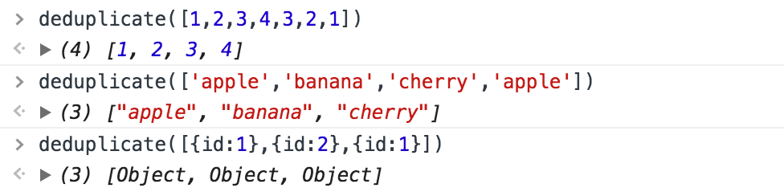
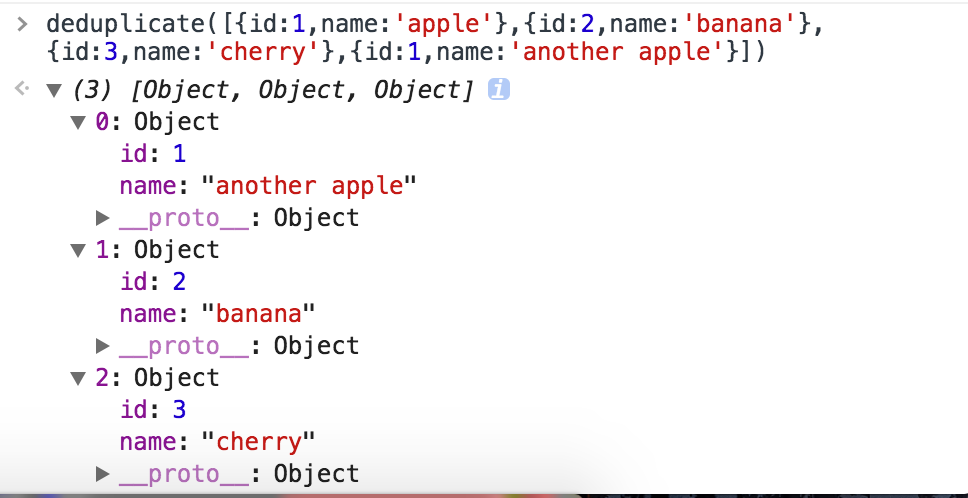

最近在写一个网易新闻的WebApp，直接调用别人的接口可以获取到新闻数据。在这个项目中有一个加载更多的功能，实现逻辑是第一次请求page=1的新闻，接收以后下一次请求page=2的新闻。这样的话如果在短时间内点击加载更多并不会出现太多的问题，但是如果第一次请求到新闻以后，过了很长一段短时间再请求第二次，那么第二次请求到的前几条数据可能和第一次请求道的后几条是重复的。于是打算想个方法来解决这个问题
其实一开始想到的方法是ES6里面的Set数据结构，Set结合REST语法可以用很简单的几行代码解决数组重复的问题
function deduplicate(arr) {
return [...new Set(arr)];
}
在控制台输入可以看到这种方法对数值数组和字符串数组是有用的，而对象数组并不起作用,因为对象是引用类型，两个对象会被认为是不同的两个对象，故Set不会对此进行去重。
除了这种方法我还可以使用什么方法来对请求到的对象数组来进行去重操作呢？这时想起了ES6还引入了另外一种数据结构——Map数据结构。Map的本质也是一个键值对的集合，而在WebApp请求到的数据中，新闻id是唯一值，所以考虑使用id作为键，新闻内容作为值。由于Map结构中键值采用'==='来判断两个值是否相等（NaN除外，在Map中NaN === NaN为true）。如果重复添加两个相同的键值对，后面的会覆盖前面的。
function deduplicate(arr) {
let ret = [];
let map = new Map();
arr.forEach(item => map.set(item.id, item));
let values = map.values();
for(let value of values) {
ret.push(value);
}
return ret;
}
现在再来看看根据某个对象属性去重的效果：
当然这种方法的使用地方比较局限，需要在已知对象属性的情况下才能使用，如果不知道对象属性的话是没有办法用这个方法对一个对象数组去重的。